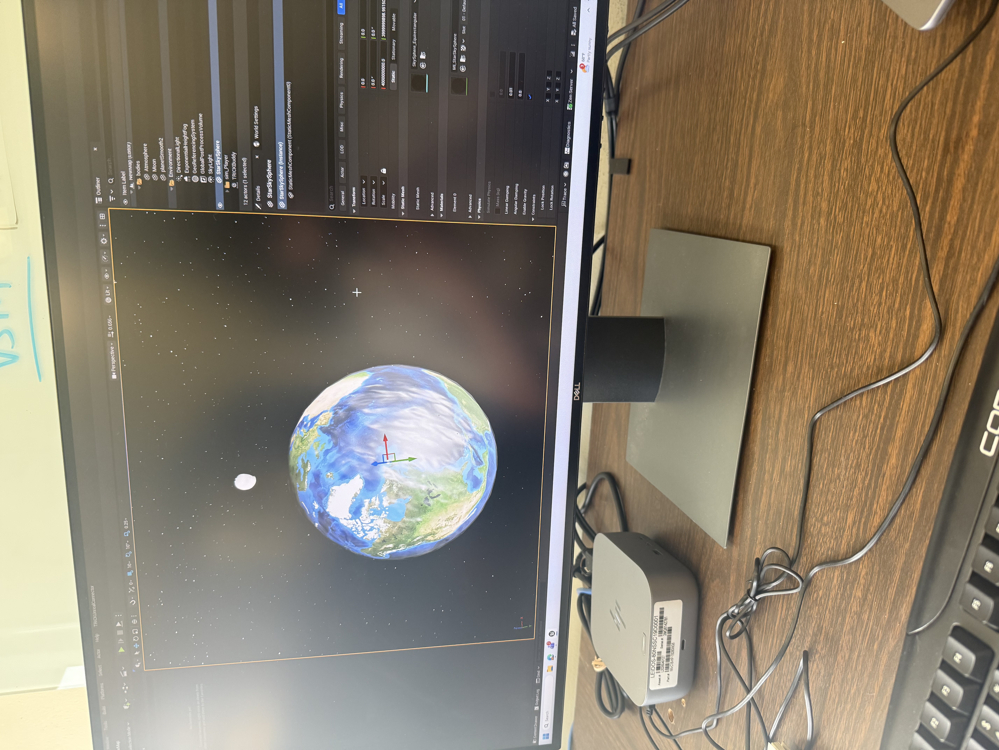
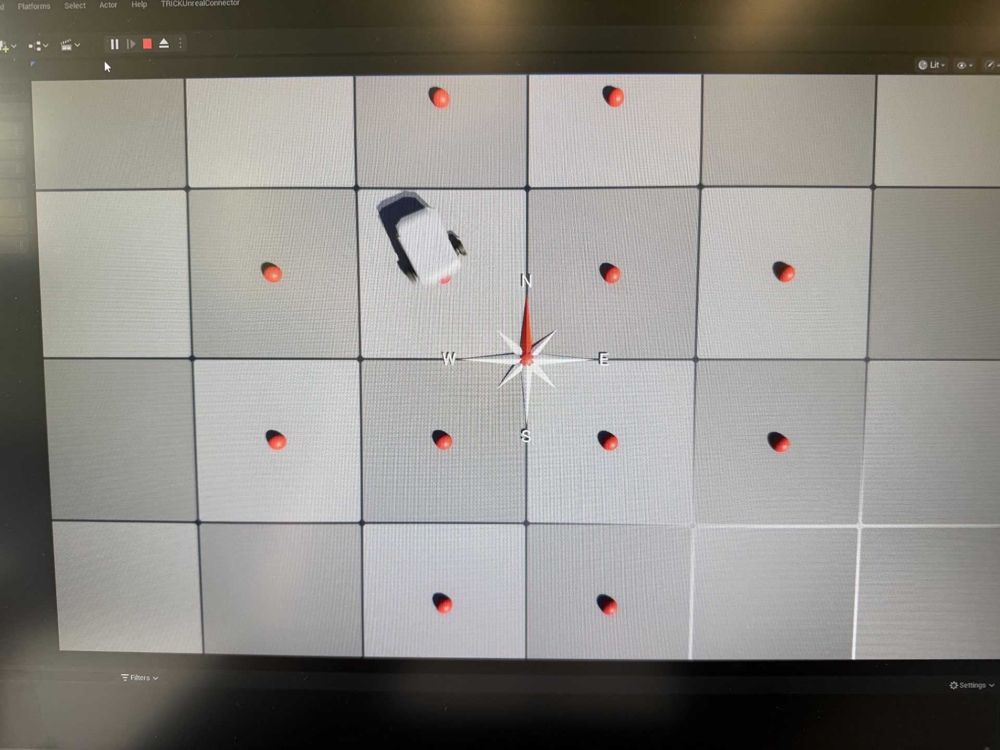
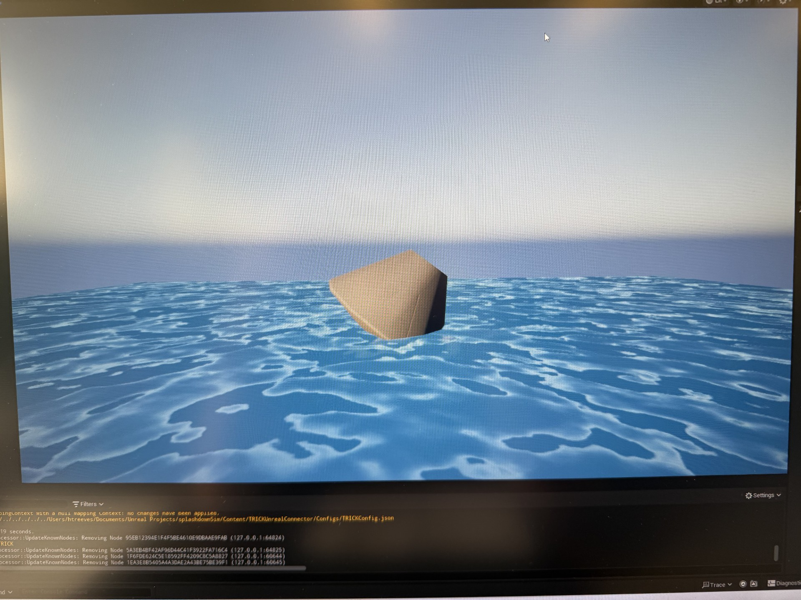

NASA OSTEM Internship
Trick Simulation Environment • Unreal Engine 5 • TUC Integration

Project Overview
During my NASA OSTEM Internship at the Johnson Space Center, my primary objective was to build functional, accessible Unreal Engine 5 (UE5) projects that directly sync with the existing example physics simulations hosted on the Trick Simulation Environment's GitHub repository. The goal was to provide concrete, working examples of how to connect NASA's core simulation backend with industry-standard 3D rendering engines.
The Trick-Unreal Connector (TUC) & Code Contributions
To bridge the gap between Trick's rigorous math models and the front-end graphics of Unreal Engine, I utilized TUC (Trick-Unreal Connector). TUC is a specialized, not-yet-open-sourced plugin designed specifically for establishing communication pipelines between the two environments.
Beyond acting as a user of the plugin to build the example projects, I actively contributed back to the core TUC codebase. During development, I identified a need for more robust spatial tracking and engineered the ability for TUC to ingest and process rotation matrices.
This structural addition allows TUC to natively handle complex 3D rotational math directly from the Trick backend. By supporting rotation matrices, the plugin ensures that the spatial orientations calculated by the physics engine are perfectly mapped and synced to the corresponding 3D actors rendering in real-time within Unreal Engine.
Example Environments Created
To demonstrate the capabilities of Trick and TUC, I developed 5 distinct Unreal Engine 5 environments. I created the necessary 3D assets and linked each UE5 project to its corresponding Trick simulation example from the official repository. These projects serve as templates for future engineers looking to integrate Trick with UE5.

SIM_satellite
Linked to the Trick satellite example to demonstrate orbital mechanics tracking.

SIM_wheelbot
Linked to the wheel bot example, showcasing rover kinematics and ground navigation.

SIM_robot
Linked to the robot example, syncing multi-joint articulation data from the physics engine.

SIM_singlerigidbody
A demonstration of 6-DOF physics and isolated rotational dynamics.

SIM_splashdown
Linked to the splashdown example to sync water entry and buoyancy calculations.
Documentation & Official Tutorials
Providing functional examples is only half the battle; ensuring other developers can actually understand and replicate the workflow is just as important. To support the longevity of the integration, I heavily focused on technical writing alongside my development.
I generated comprehensive Doxygen documentation for the codebase to support future plugin development and maintain clear records of the API functions.
Official Trick Documentation Contribution
I authored a complete, step-by-step tutorial that was published directly into the official Trick Documentation How-To Guides. This guide walks developers through the entire process of setting up a fresh Unreal Engine project, installing the necessary plugins, and successfully establishing a live connection with a running Trick simulation.
Read My How-To Guide